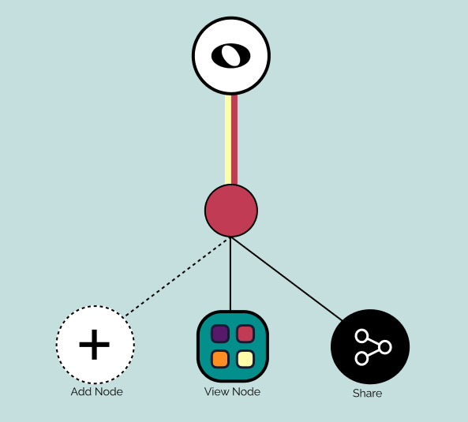

A screenshot of the Whole Node UI, created in Figma, depicting how project nodes are displayed and interacted with.
This application UI was the term project for a Human Computer Interaction (UI/UX) class, wherein we specified, designed, prototyped, and evaluated an innovative and novel interface.
During the songwriting process, songwriters frequently find themselves with an abundance of song fragments, chord progressions, and other theoretical or aural musical inspirations with no effective means of documenting and organizing these elements. Tracking the progression of a song and documenting how it changes over time is a time-consuming process, requiring writers to continually organize their ever-expanding library of files. Often the user is forced to delete files containing plausible song iterations, or transfer their ideas to a different device, making the comparison of different versions of a given song difficult. Solving this problem would mean a more streamlined process that makes creating music more focused on fun collaboration, rather than spending time organising disparate files into one place.
Our solution to this problem is a system that provides version control for songwriters. Our system would use a tree structure to record the development of the project, providing songwriters with easy access to their audio and text files. Additionally, this system would allow users to examine previous versions of their project and track the development of their work. Key features of this system would allow users to record and document all the information of the song at that point in time (lyrics, audio recording, photos/videos of song being played, keyboard settings, etc) for each song iteration.
Each milestone was documented in a report, available in the pdf files linked above.
Milestone 1, not included in this portfolio, was a set of proposals for applications to create and test novel interfaces for. Of these, Whole Node was the most popular and original idea.
We developed a paper prototype of a Whole Node, mobile application that provides various features to assist songwriters during their songwriting, including:
We then performed a usability inspection using the heuristic evaluation method, assigned severity ratings to the issues observed, and proposed changes to the prototype based on these issues.
The low-fidelity paper prototype and table of heuristic evaluations/proposals can be observed in the report pdf.
Using Figma, we designed a vertical slice medium-fidelity prototype of the Whole Node UI that implemented the improvements proposed from the usability inspection. The goals of the prototype were to:
The medium-fidelity prototype can be observed under the "Figma Page" tab above, with a feature showcase available in the "Video Walkthrough" tab.
We followed a multi-pronged approach for user evaluation; combining multiple questionnaires to gather quantitative data regarding user experience with a follow-up interview for the collection of qualitative information.
The questionnaires given to users gathered data on their ability to complete tasks, their satisfaction levels, their aesthetic design preferences, and their demographic information. These followed an “A-B” pattern, wherein a user was given one-of-two interfaces, completed several tasks with it, and answered a questionnaire on their experience using that interface.
The user was then given a second, slightly different interface, completed the same task, and answered an additional questionnaire. These were used to find a favoured implementation. Both questionnaires left a blank section for users to input qualitative insights.
The follow-up interviews contained a series of open and close-ended questions, providing the user with an opportunity to provide dynamic feedback and verbalise their experiences using the app beyond the two tasks given. These interviews were recorded and transcribed to provide additional feedback. The interview questions were weighted towards open-ended, subjective inquiries to gather user insights.
Below is an iframe showing the layout of the Whole Node UI in Figma. The Figma icon above links to the Figma page where prototypes can be viewed, but requires a log-in.